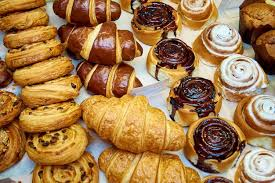
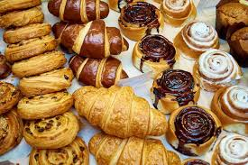

Welcome to Baked By Alciia!
This is a page to show my favourite recipes, as well as show my favourite resources to help others with their baking journey.
My Personal Baking Page!
This is a page to show my favourite recipes, as well as show my favourite resources to help others with their baking journey.
